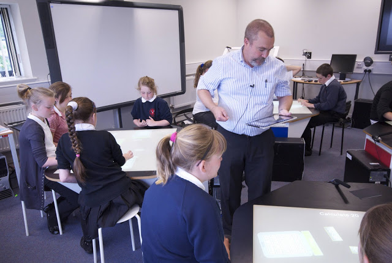

media
SynergyNet Classroom in Use – and Making the News!
Here’s a clip from the recent media day at the SynegyNet lab – the teacher and students worked hard all day, while journalists and photographers came by to see what we’ve been up to.
The day was covered by BBC local TV and radio, and by over 50 news sources. For a complete list see our Media Coverage page.
Classroom Data Collection
The SynergyNet team are in the midst of a classroom study – with two teachers with their classes each in the lab for 2 days each.
Here’s a few photos of what’s been going on.


iPad meets SynergyNet
The SynergyNet team got to bring some of their favourite things together this week – multi-touch technology, maths classes and really pretty hardware. See the photos below of Prof Steve Higgins running the mulit-touch tables and managing the classroom from his ipad, while the students worked on our newest application, NumberNet:


Networked Content
Since its inception, the SynergyNet content management system has supported networked content. The practical application of this is readily seen in the following video by James McNaughton. It shows two tables running side by side with content items being transferred by ‘flicking’ or ‘throwing’ towards the edge closest to the other table:
Pupils from Our Lady Queen of Martyrs
Pupils from Our Lady Queen of Martyrs, Esh Winning, Co. Durham came to the laboratories of the Technology Enhanced Learning Research Group to try out the early stages of the SynergyNet software produced as part of this project.